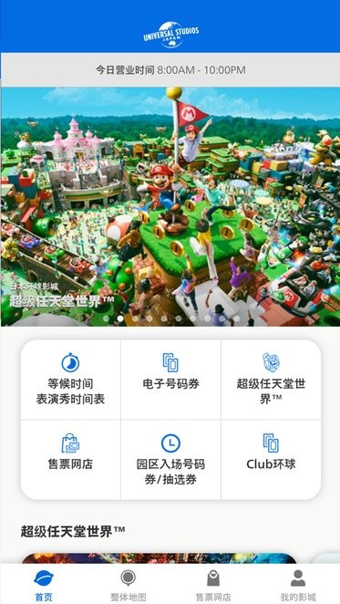

日本环球影城官方 App 从装到用，一篇搞定排队和预约
第一次去 USJ 不知道下什么 App、怎么领号码券、怎么约快速通行？跟着这篇从零实操到进园区，少走弯路少排队。
这篇教程写完，你应该能独立在手机上完成三件事：从正规渠道装好官方 App、把门票登记进 App 让它生效、进园区后第一时间用号码券或预约乘坐锁定热门设施。整个过程不需要任何第三方工具，就一个官方 App 搞定。

准备工作
动手前先确认四个前置条件，缺一个都可能卡壳：
- 手机系统版本够新——App 要求 iOS 17.0 以上或 Android 9.0 以上，太旧的系统装不上或装上闪退。iPhone 用户去「设置 → 通用 → 软件更新」检查一下，安卓同理。
- 已经买好入场票——Studio Pass（大门票）是一切的前提，Express Pass（快速通行券）是可选的但热门日期强烈建议配。票可以在 App 里直接买，也可以去官网售票商店，但二手票别碰，官方严令禁止转卖，查到直接拦在园区门口。
- 有网——不管是装 App 还是登记门票还是领号码券，全程需要联网。Wi-Fi 蛋或移动数据都可以，园区里也有免费 Wi-Fi 但偶尔会慢。
- 预留至少 5GB 手机空间——App 本身不大，但启动时会拉园区实时数据，空间不够会闪退。
第一步：安装并登录
打开手机自带的应用商店，搜「USJ Official App」或「ユニバーサル・スタジオ・ジャパン」，认准发行方是 Universal Studios Japan 那一款，别下成第三方攻略 App。找不到的话，直接去下载拿安装包也行。
装完打开，会让你注册或登录 Club Universal 账户。老用户直接输邮箱密码；新用户点注册，填邮箱、设密码就行，全程一两分钟。登录之后在 App 底部导航栏能看到「我的影城」标签，点进去确认账户状态正常就可以往下走了。
第二步：登记门票让它生效
这一步最关键，门票没登记进 App，号码券和预约乘坐都用不了。
打开 App，找「电子号码券」或「门票登记」的入口，不同版本位置略有差异——一般在首页下半部分或底部导航的「我的影城」里。点进去之后有两种方式：
- 扫二维码：门票实体票或电子票上都有一个黑色二维码，用 App 里的扫码功能对准，听到「叮」的一声就登记上了。
- 手动输入票号：扫不上的话选手动输入，票号一般是一串字母数字组合，在门票正面。
登记成功后回到「我的影城 → 已购门票」，应该能看到 Studio Pass（和 Express Pass 如果买了的话）出现在列表里，日期、人数都显示正确。这一步没成功的话后面所有功能都用不了，别急着往下走，先确保门票条目正常显示。
第三步：进园区第一时间领号码券或约 Yoyakunori
USJ 热门设施基本都走「号码券」或「预约乘坐」机制，直接去排可能要等一两个小时。进园区过了安检之后，掏出 App 先做这件事。
普通号码券
打开「电子号码券」界面，App 会根据你登记的门票显示当前可以领的设施。每个设施会给你一个 30 到 60 分钟的时间窗口，比如「14:00 ~ 14:30」，你在这个时间段内回去走快速通道就行，不用一直排着。
领号码券是先到先得的，热门日期开园后十几分钟就发完，然后会切换成「抽选模式」——类似摇号，中了给你一个时间段，没中就只能现场排了。所以进园第一件事就是掏 App 领券，别先去逛商店或吃早饭。
Yoyakunori 预约乘坐（更精准）
如果你买了 Express Pass，或者当天部分设施有免费预约名额，App 里会出现「预约乘坐」标签。和普通号码券给一个半小时窗口不同，Yoyakunori 让你指定精确到 10 分钟的乘车时间——比如你可以约「14:20 飞天翼龙」，到点直接走快速通道上车。
操作方式和领号码券差不多，进去选设施、选时间点、确认锁定。Express Pass 持有者基本都能选到自己想要的时段，普通 Studio Pass 能不能拿到免费名额要看当天园区放了多少，以 App 实时显示为准，想查支持哪些设施或时间点规律，usj app文档的预约乘坐章节讲得比较全。
第四步：用等候时间找空档
领到号码券之后，中间可能有一两个小时的空档，别瞎逛——打开「等候时间」界面，App 默认显示游乐设施 Tab，按排队时长给所有设施排了序。你可以切到顶部的四个 Tab 看看：
- 游乐设施 Tab 里每个设施左侧有小图标，黄色过山车图标是过山车类、蓝色胶片图标是 4D 动感电影、绿色小孩图标是儿童设施，一眼就能筛选出你感兴趣的类型，然后挑排队短的先去。
- 表演秀 Tab 不是排队时间，而是当日时间表——街头秀、剧场表演、巡游的开场时间、地点、时长都列好了，还能加收藏夹开场前给你推通知。
- 餐厅 Tab 显示部分餐厅的实时等位情况，标注「少」的就是空位充足，可以去之前先看一眼园区地图定位。
- 商店 Tab 主要是位置导航，找纪念品的时候快速定位用。
等号码券的那段时间，打开等候时间界面扫一眼，顺路就能多玩一两个短排队的设施，比站在原地干等强。

新手最容易翻车的三个坑
坑一：App 打不开或闪退
这是新手遇到最多的问题。别慌，按顺序排查：先强制关掉 App 重开，不行就检查网络能不能打开网页，再不行去应用商店看有没有更新、清除 App 缓存（只清缓存不清存储），还不行就卸载重装——注意重装之后要重新登记门票、重新登录 Club Universal、重新刷号码券，如果号码券已经发完切到抽选了，重装也刷不到，所以重装之前先确认自己手上有没有生效的券。
坑二：门票登记失败
扫二维码扫不上的话，检查一下是不是把票号那串字符当成二维码扫了——实体票上二维码和票号是两个不同的东西，找那个黑色的方块图案。手动输入票号的话，注意别把字母 O 和数字 0 搞混。如果确认票号没错但还是登记不上，大概率是这张票已经被绑定到别的账户了，这种情况只能联系园区现场服务台处理。
坑三：号码券领了但到点没赶回去
号码券和 Yoyakunori 都有时间窗口，过了就作废。别把时间掐得太死——比如 14:00 的券，13:50 之前就要往设施那边走，园区里人多路窄，步行时间比你想象的长。实在赶不上的话，App 里一般可以取消，取消之后名额会放出来给其他人。
往下还能玩什么
App 的功能远不止排队和号码券——园区地图可以实时定位自己的位置、找厕所和餐厅；收藏夹能把感兴趣的表演、餐厅、设施集中管理；SNW 手环（如果买了的话）扫一下能同步金币和照片记录。这些功能不急着第一天就摸透，进园区玩到第两天第三天再慢慢翻，效率最高。
USJ 这套 App 生态在日本主题乐园里算是做得比较完善的，但毕竟是给日本用户设计的，偶尔会有小 bug 或界面上的日语提示看不懂。遇到拿不准的功能先别急着点，别硬扛。怕官方临时抽风找不到内容，这套资料在GitHub、Gitee、GitCode都留了备份，哪个顺手用哪个。